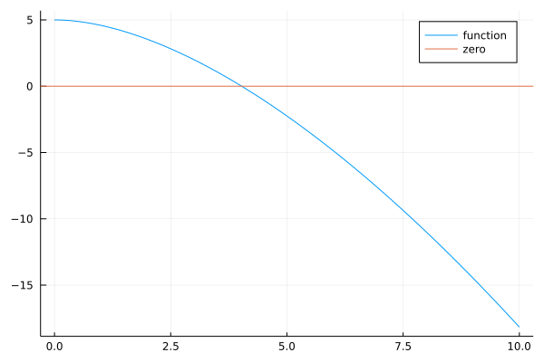
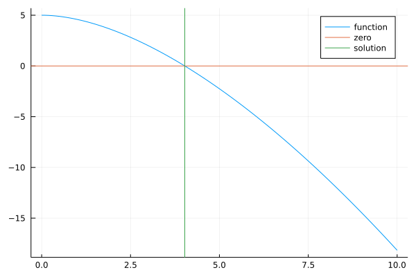

Bisection
Contents
Bisection¶
to be written
using Roots #required by find_zero
using Printf #required by @sprintf
using Plots
Root-finding procedures¶
Suppose that we want to find the root of the following function:
\[ Fun_1(x) = x - x\cdot\sqrt{x+1} + 5 \]
Fun1(x)=x-x*√(x+1)+5
Fun1 (generic function with 1 method)
grid_points = 0:.1:10
fun_val=Array{Float64,1}(undef, length(grid_points))
for (count, arg)∈enumerate(grid_points)
fun_val[count] = Fun1(arg)
end
map(Fun1,grid_points)
101-element Vector{Float64}:
5.0
4.995119115182985
4.980910976997934
4.957947372470259
4.92671361735203
4.887627564304205
4.841053361559589
4.7873116632716295
4.726687370800101
4.6594356123118805
4.585786437626905
4.505948557919162
4.420112363097041
⋮
-14.10319624614305
-14.460498941515414
-14.820252419368678
-15.18244373771521
-15.547060156739057
-15.914089133602552
-16.283518317437338
-16.65533554451143
-17.02952883356448
-17.40608638130377
-17.784996558053976
-18.166247903553995
This function looks as follows:
plot(grid_points, fun_val, label="function")
hline!([0], label="zero")

Bisection¶
xₗ = 0
xᵣ = 10
mid_point = (xᵣ + xₗ)/2
Fun1( xₗ )*Fun1( xᵣ ) #it's negative
for i ∈ 1:100
mid_point = (xᵣ + xₗ)/2
if Fun1( mid_point ) * Fun1( xₗ ) < 0
xᵣ = mid_point
else
xₗ = mid_point
end
println("i=$i, mid_point = $(round(mid_point, digits=3)), Fun1($(round(mid_point, digits=3))) = $(round(Fun1(mid_point), digits=3))")
if abs(Fun1(mid_point)) < .001 #Tolerance error
println(" 😃 abs(Fun1(mid_point))=$(abs(Fun1(mid_point))), which less than .001!!!")
break
end
end #i ∈ 1:100
i=1, mid_point = 5.0, Fun1(5.0) = -2.247
i=2, mid_point = 2.5, Fun1(2.5) = 2.823
i=3, mid_point = 3.75, Fun1(3.75) = 0.577
i=4, mid_point = 4.375, Fun1(4.375) = -0.768
i=5, mid_point = 4.062, Fun1(4.062) = -0.078
i=6, mid_point = 3.906, Fun1(3.906) = 0.254
i=7, mid_point = 3.984, Fun1(3.984) = 0.089
i=8, mid_point = 4.023, Fun1(4.023) = 0.006
i=9, mid_point = 4.043, Fun1(4.043) = -0.036
i=10, mid_point = 4.033, Fun1(4.033) = -0.015
i=11, mid_point = 4.028, Fun1(4.028) = -0.005
i=12, mid_point = 4.026, Fun1(4.026) = 0.0
😃 abs(Fun1(mid_point))=0.0004735185227016103, which less than .001!!!
plot(grid_points, fun_val, label="function")
hline!([0], label="zero")
vline!([mid_point], label="solution")

Ilustration of the algorithm¶
grid_points = 0:.1:20
fun_val=Array{Float64,1}(undef, length(grid_points))
for (count, arg)∈enumerate(grid_points)
fun_val[count] = Fun1(arg)
end
plot(grid_points, fun_val, label="function")
hline!([0], label="zero")
xₗ = Array{Float64, 1}(undef, 100)
xᵣ = Array{Float64, 1}(undef, 100)
mid_point = Array{Float64, 1}(undef, 100)
xₗ[1] = 0
xᵣ[1] = 20
mid_point[1] = (xₗ[1] +xᵣ[1] )/2
for i ∈ 1:99
if Fun1(mid_point[i]) * Fun1( xₗ[i] ) < 0
xᵣ[i+1] = mid_point[i]
xₗ[i+1] = xₗ[i]
else
xₗ[i+1] = mid_point[i]
xᵣ[i+1] = xᵣ[i]
end
mid_point[i+1] = (xₗ[i+1] + xᵣ[i+1] )/2
println("i=$i, mid_point = $(round(mid_point[i+1], digits=3)), Fun1($(round(mid_point[i+1], digits=3))) = $(round(Fun1(mid_point[i+1]), digits=3))")
if abs(Fun1(mid_point[i+1])) < .001 #Tolerance error
println(" 😃 abs(Fun1(mid_point))=$(abs(Fun1(mid_point[i+1]))), which less than .001!!!")
break
end
end #i ∈ 1:100
i=1, mid_point = 5.0, Fun1(5.0) = -2.247
i=2, mid_point = 2.5, Fun1(2.5) = 2.823
i=3, mid_point = 3.75, Fun1(3.75) = 0.577
i=4, mid_point = 4.375, Fun1(4.375) = -0.768
i=5, mid_point = 4.062, Fun1(4.062) = -0.078
i=6, mid_point = 3.906, Fun1(3.906) = 0.254
i=7, mid_point = 3.984, Fun1(3.984) = 0.089
i=8, mid_point = 4.023, Fun1(4.023) = 0.006
i=9, mid_point = 4.043, Fun1(4.043) = -0.036
i=10, mid_point = 4.033, Fun1(4.033) = -0.015
i=11, mid_point = 4.028, Fun1(4.028) = -0.005
i=12, mid_point = 4.026, Fun1(4.026) = 0.0
😃 abs(Fun1(mid_point))=0.0004735185227016103, which less than .001!!!
anim = @animate for j∈1:10
plot(grid_points, fun_val, label="function", xlim=[2.5 7.5])
for i∈1:j
annotate!([( mid_point[i], Fun1(mid_point[i]), "$i")])
end
hline!([0], label="zero")
end
gif(anim, "anim.gif", fps = 5)
┌ Info: Saved animation to
│ fn = /Users/pytka/Dropbox/My Mac (juprof-vwl06)/Documents/OwnLearning/julia-intro/anim.gif
└ @ Plots /Users/pytka/.julia/packages/Plots/SVksJ/src/animation.jl:104
![]()
#BUILT-IN FUNCTIONS #Root finding procedure. #One of examples of such a procedure you should know: BISECTION.
solution = fzero(Fun1, 1)
4.026100199345813
Fun1(solution)
8.881784197001252e-16
Iterative root finding procedure¶
\[\begin{split}
\begin{cases}
Fun_1(x,y) = x - \sqrt{x+y} - 3\\
Fun_2(x,y) = y - \sqrt{x+\frac{1}{y}} - 5
\end{cases}
\end{split}\]
Fun1(x,y)=x-√(x+y)-3
Fun2(x,y)=y-√(x+1/y)-5
Fun2 (generic function with 1 method)
y0 = .7
x0 = fzero( x -> Fun1(x,y0), 1)
Fun1(x0,y0)
0.0
#But
Fun2(x0,y0)
-6.929834998627596
y0 = fzero( y -> Fun2(x0,y), 1)
Fun2(x0,y0)
# Fun1(x0,y0)
0.0
Fun1(x0,y0)
-1.098452432583965
y0 = .7
for i∈1:9
global x0 = fzero( x -> Fun1(x,y0), 1)
println("Iteration no. $i. x₀=$x0, y₀=$y0,")
println("Iteration no. $i. Fun1(x0,y0)=$(Fun1(x0,y0)), Fun2(x0,y0)=$(Fun2(x0,y0))")
println("---")
global y0 = fzero( y -> Fun2(x0,y), 1)
println("Iteration no. $i. x₀=$x0, y₀=$y0,")
println("Iteration no. $i. Fun1(x0,y0)=$(Fun1(x0,y0)), Fun2(x0,y0)=$(Fun2(x0,y0))")
println("================================================================")
end
Fun1(x0,y0)
Fun2(x0,y0)
Iteration no. 1. x₀=5.487460691435179, y₀=0.7,
Iteration no. 1. Fun1(x0,y0)=0.0, Fun2(x0,y0)=-6.929834998627596
---
Iteration no. 1. x₀=5.487460691435179, y₀=7.371312241577558,
Iteration no. 1. Fun1(x0,y0)=-1.098452432583965, Fun2(x0,y0)=0.0
================================================================
Iteration no. 2. x₀=6.759035477189157, y₀=7.371312241577558,
Iteration no. 2. Fun1(x0,y0)=4.440892098500626e-16, Fun2(x0,y0)=-0.2544631739539298
---
Iteration no. 2. x₀=6.759035477189157, y₀=7.624916086558346,
Iteration no. 2. Fun1(x0,y0)=-0.033582558383038474, Fun2(x0,y0)=0.0
================================================================
Iteration no. 3. x₀=6.797713766620498, y₀=7.624916086558346,
Iteration no. 3. Fun1(x0,y0)=4.440892098500626e-16, Fun2(x0,y0)=-0.007357218192534987
---
Iteration no. 3. x₀=6.797713766620498, y₀=7.6322493687398625,
Iteration no. 3. Fun1(x0,y0)=-0.0009653637299931184, Fun2(x0,y0)=0.0
================================================================
Iteration no. 4. x₀=6.798825452905907, y₀=7.6322493687398625,
Iteration no. 4. Fun1(x0,y0)=4.440892098500626e-16, Fun2(x0,y0)=-0.00021115812788430333
---
Iteration no. 4. x₀=6.798825452905907, y₀=7.6324598406132855,
Iteration no. 4. Fun1(x0,y0)=-2.770212906888503e-5, Fun2(x0,y0)=0.0
================================================================
Iteration no. 5. x₀=6.798857353783775, y₀=7.6324598406132855,
Iteration no. 5. Fun1(x0,y0)=4.440892098500626e-16, Fun2(x0,y0)=-6.059131589353228e-6
---
Iteration no. 5. x₀=6.798857353783775, y₀=7.6324658800535685,
Iteration no. 5. Fun1(x0,y0)=-7.94902135670128e-7, Fun2(x0,y0)=8.881784197001252e-16
================================================================
Iteration no. 6. x₀=6.798858269167314, y₀=7.6324658800535685,
Iteration no. 6. Fun1(x0,y0)=0.0, Fun2(x0,y0)=-1.7386426698351443e-7
---
Iteration no. 6. x₀=6.798858269167314, y₀=7.632466053352803,
Iteration no. 6. Fun1(x0,y0)=-2.280938415921696e-8, Fun2(x0,y0)=0.0
================================================================
Iteration no. 7. x₀=6.798858295433861, y₀=7.632466053352803,
Iteration no. 7. Fun1(x0,y0)=0.0, Fun2(x0,y0)=-4.988962132301822e-9
---
Iteration no. 7. x₀=6.798858295433861, y₀=7.632466058325552,
Iteration no. 7. Fun1(x0,y0)=-6.545062269935897e-10, Fun2(x0,y0)=8.881784197001252e-16
================================================================
Iteration no. 8. x₀=6.79885829618757, y₀=7.632466058325552,
Iteration no. 8. Fun1(x0,y0)=4.440892098500626e-16, Fun2(x0,y0)=-1.4315482133042678e-10
---
Iteration no. 8. x₀=6.79885829618757, y₀=7.632466058468243,
Iteration no. 8. Fun1(x0,y0)=-1.8780532684559148e-11, Fun2(x0,y0)=0.0
================================================================
Iteration no. 9. x₀=6.798858296209197, y₀=7.632466058468243,
Iteration no. 9. Fun1(x0,y0)=4.440892098500626e-16, Fun2(x0,y0)=-4.107825191113079e-12
---
Iteration no. 9. x₀=6.798858296209197, y₀=7.632466058472337,
Iteration no. 9. Fun1(x0,y0)=-5.38680211548126e-13, Fun2(x0,y0)=0.0
================================================================
0.0
Example of iterative procedure¶
# Parameters
α = .189 #price elasticity from Aguiar-Hurst (AER, 2007) https://www.aeaweb.org/articles?id=10.1257/aer.97.5.1533
δ = .33
L = 40
R = 10
y = 1
β = .8867 #.997^L
0.8867
\[\begin{split}p_R = \left( \frac{1}{1+\frac{c_R}{\alpha}} \right)^{-\alpha}\\
p_W = \left( \frac{1-\delta}{1+\frac{c_W}{\alpha}} \right)^{-\alpha}\\
c_R = \sqrt{ \beta \frac{p_W}{p_R} } c_W\\
p_R c_R \cdot\rho_R + p_W c_W \cdot\rho_W = y\cdot \rho_W\end{split}\]
pR(cR) = (1/(1+cR/α))^(-α)
pW(cW) = ((1-δ)/(1+cW/α))^(-α)
cR(cW, cR) = √(β*pW(cW)/pR(cR)) * cW
cR (generic function with 1 method)
cᴿ_value = .9 #Initial guess for retired consumption
#Implied value of working consumption given cᴿ_value:
cᵂ_value = fzero( cW -> pR(cR(cW,cᴿ_value))*cR(cW, cᴿ_value)*R + pW(cW)*cW*L-L*y, 1)
pR(cR(cᵂ_value,cᴿ_value))*cR(cᵂ_value, cᴿ_value)*R + pW(cᵂ_value)*cᵂ_value*L-L*y
0.0
#but cR(cᵂ_value , cᴿ_value) ≠ cᴿ_value --- contradiction
cR(cᵂ_value , cᴿ_value)
0.5523917350799546
println("------------------------------------------")
println("👻 Iterative procedure STARTS:")
@time for i ∈ 1:7
global cᵂ_value = fzero( cW -> pR(cR(cW,cᴿ_value))*cR(cW, cᴿ_value)*R + pW(cW)*cW*L-L*y, 1)
global cᴿ_value = cR(cᵂ_value, cᴿ_value)
println("Iteration No. $i, cᴿ=$(@sprintf("%.5f", cᵂ_value)), cᵂ=$(@sprintf("%.5f", cᴿ_value))")
end
println("------------------------------------------")
------------------------------------------
👻 Iterative procedure STARTS:
Iteration No. 1, cᴿ=0.58347, cᵂ=0.55239
Iteration No. 2, cᴿ=0.57968, cᵂ=0.56885
Iteration No. 3, cᴿ=0.57990, cᵂ=0.56790
Iteration No. 4, cᴿ=0.57989, cᵂ=0.56795
Iteration No. 5, cᴿ=0.57989, cᵂ=0.56795
Iteration No. 6, cᴿ=0.57989, cᵂ=0.56795
Iteration No. 7, cᴿ=0.57989, cᵂ=0.56795
0.229262 seconds (308.59 k allocations: 12.947 MiB, 4.61% gc time, 100.14% compilation time)
------------------------------------------
pR(cR(cᵂ_value,cᴿ_value))*cR(cᵂ_value, cᴿ_value)*R + pW(cᵂ_value)*cᵂ_value*L-L*y
1.0590227361717552e-8
cR(cᵂ_value , cᴿ_value)
0.567948706299423
println("Summary statistics:")
println("===================================================")
println("Retirement to working prices 💵 : $(@sprintf("%.4f",(pR(cR(cᵂ_value, cᴿ_value ))/pW(cᵂ_value)))).")
println("Retirement to working cons. 🍎 : $(@sprintf("%.4f",(cR(cᵂ_value,cᴿ_value)/cᵂ_value))).")
println("Retirement to working cons. exp. 💵🍎 : $(@sprintf("%.4f",(pR(cR(cᵂ_value,cᴿ_value))*cR(cᵂ_value,cᴿ_value)/(pW(cᵂ_value)*cᵂ_value)))).")
println("===================================================")
Summary statistics:
===================================================
Retirement to working prices 💵 : 0.9244.
Retirement to working cons. 🍎 : 0.9794.
Retirement to working cons. exp. 💵🍎 : 0.9053.
===================================================